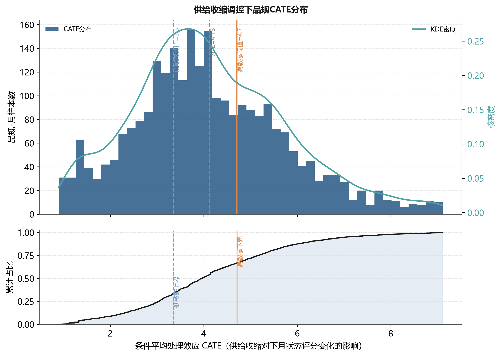
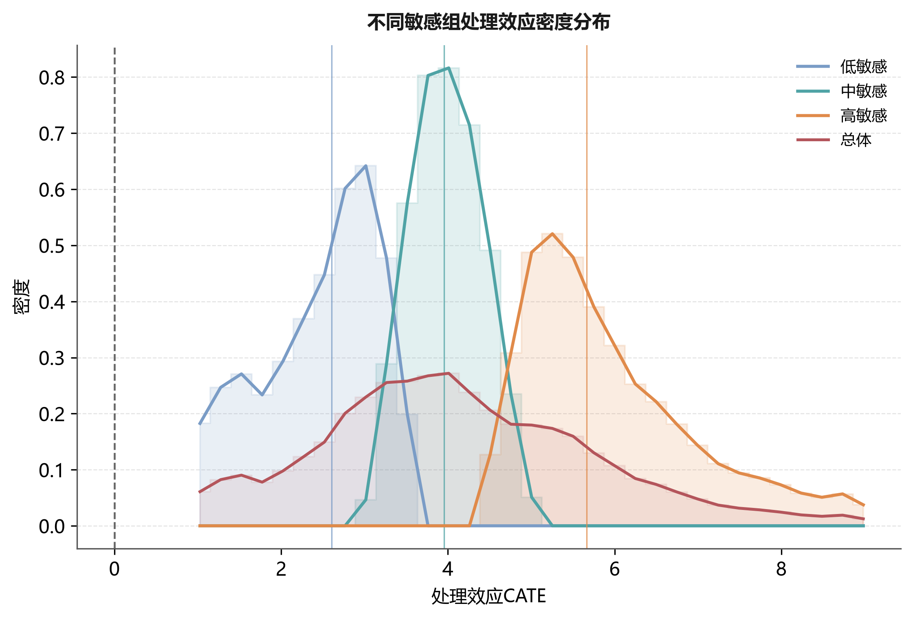
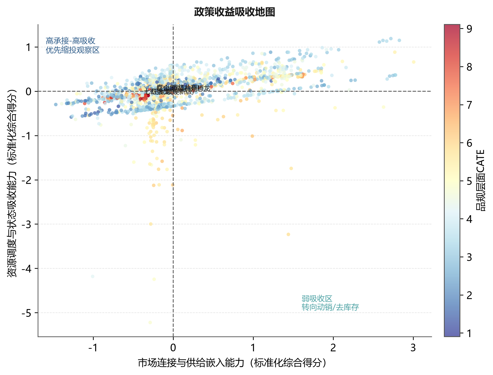
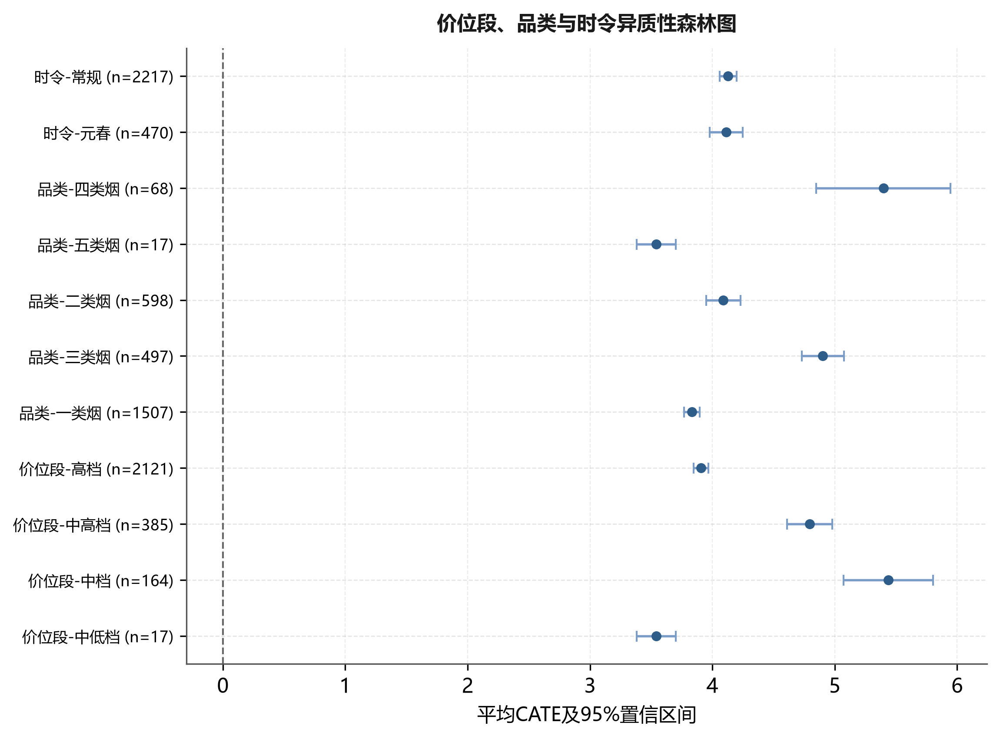
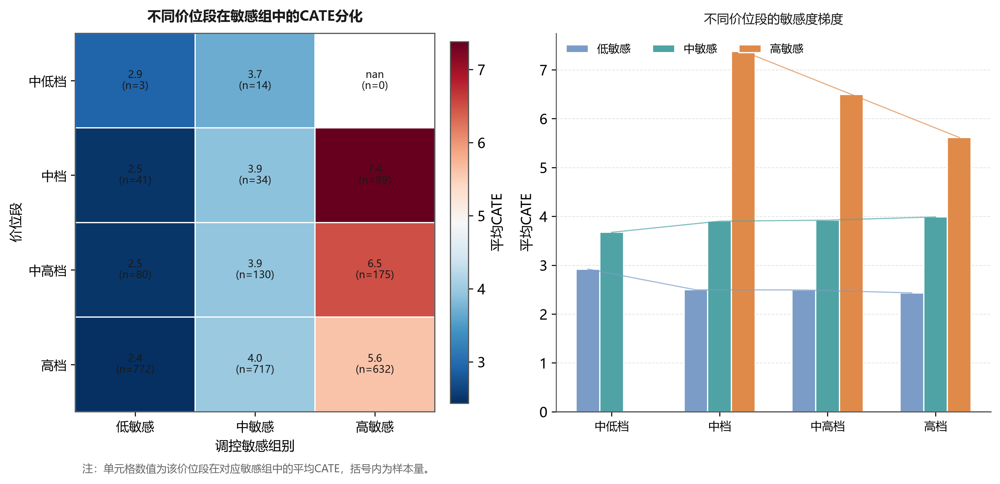
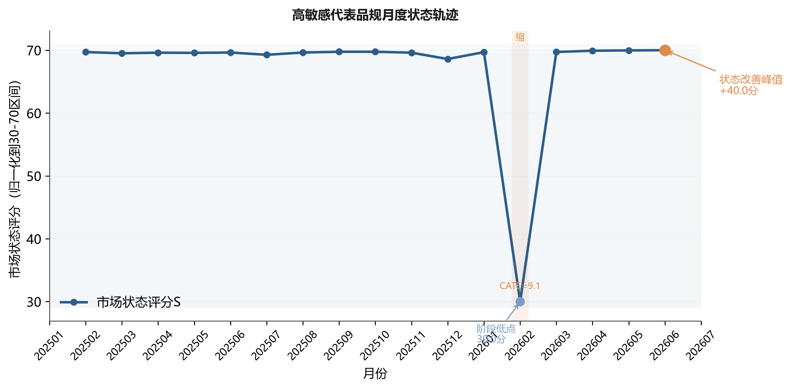
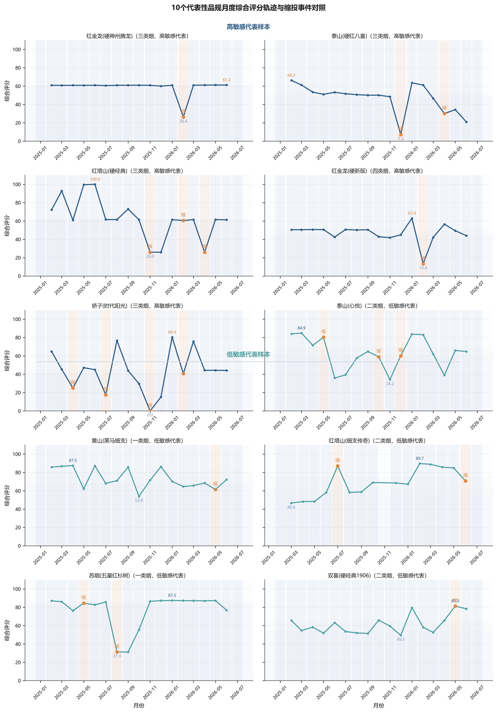

基于因果森林的卷烟品规缩投效应识别与差异化调控
Identification and differentiated regulation of supply-contraction effects across cigarette specifications based on causal forest
摘 要：
【目的】为破解卷烟品规月度供给收缩调控中对象识别依赖经验与平均效应、难以区分调控成效的问题，构建面向品规调控场景的因果森林，识别适合缩投的品规并解释其效应来源。
【方法】以某市203个品规19个月的品规—月份面板为样本，按式（1）构造市场状态评分，以式（2）定义下一期状态变化；以订单满足率不高于同月35%分位且较上月下降超过2个百分点识别供给收缩。模型使用23维t−1期经营画像、按品规分组的5折交叉拟合和600棵诚实因果树估计CATE，并以森林变量重要性、业务参考分箱、处理组内回溯和1∶1倾向得分匹配进行解释与复核。
【结果】ATE为4.126（95%CI：1.448～6.803），CATE标准差为1.625。在实际缩投样本中，CATE上三分之一与其余样本的改善率分别为83.7%和52.9%；但缩投前状态仍有差异，故该比较仅支持排序复核价值。PSM后平均|SMD|降至0.040。
【结论】因果森林能够把卷烟品规调控由状态评价推进到对象排序和幅度复核，形成优先缩投、观察复核、暂缓缩投三档清单，为差异化精准投放提供可解释、可复核的量化依据。
关键词：卷烟品规；因果森林；条件平均处理效应；差异化调控；精准投放；稳健性检验
Abstract:
[Objective] To address the difficulty of identifying suitable targets for monthly supply-contraction control across cigarette specifications and the reliance of allocation review on experience and average effects, this paper develops a causal forest for cigarette specification regulation and identifies the specifications that benefit most as well as the sources of the effect.
[Methods] A specification-month panel of 203 specifications over 19 months in one city was built. Operating covariates were organized around supply, demand, price, inventory, channel and structure; the contraction event was defined by a decline in the order-fulfillment ratio. The heterogeneous contraction effect of each specification was estimated with an orthogonalized-residual honest forest, and an evidence chain was formed by combining variable-contribution interpretation, rule extraction, historical back-testing and robustness checks.
[Results] The ATE was 4.126 (95% CI: 1.448 to 6.803), and the standard deviation of CATE was 1.625. The retrospective improvement rates were 83.7% and 52.9%, respectively; baseline imbalance limits this comparison to ranking validation. After propensity-score matching, the mean absolute SMD decreased to 0.040.
[Conclusion] The method advances specification regulation from state evaluation to object ranking, and generates a three-tier monthly allocation list for priority contraction, review and avoidance, providing interpretable and reviewable support for differentiated and precise regulation.
Keywords: cigarette specification; causal forest; conditional average treatment effect; differentiated regulation; robustness test; precise allocation
0 引言
卷烟品规是商业企业组织货源投放、库存调节、价格维护和终端服务的核心对象，科学的月度投放调控对稳定价盘、化解库存压力、提升终端盈利具有重要意义。在实际经营中，供给收缩是常用调控动作，但投放复核多依赖客户经理经验和全品规平均指标，主要存在三方面不足：一是难以区分调控对象，平均效应把不同品规压缩为一个值，无法回答缩投对哪些品规有效、对哪些品规无效；二是响应滞后，从指标异常到人工识别对象再到执行缩投存在较长时滞；三是复核缺乏解释，即便识别出候选对象，也难以说明其效应来源，无法形成可复核、可反馈的差异化清单。为此，需要从品规层面估计缩投的异质性处理效应，并将其转化为可执行的调控清单。
已有研究从不同层面为品规调控提供了支撑。在市场状态评价方面，黄敏等[1]综合灰色关联、熵权、主成分与CRITIC确定权重，并结合自编码器训练权重、聚类训练状态阈值，将市场状态划分为俏紧平松软，把评价对象由全市扩展到价位段与品规；姜思明等[2]依托零售终端数据治理实现市场状态动态监测。在零售户与品牌画像方面，谭琛等[3]基于高维精准画像与深度学习对零售户动态分档，刘佳等[4]构建了零售终端及卷烟品牌数字画像，李卓等[5]采用RFM模型研究零售客户盈利水平提升策略。在投放决策与品规生命周期方面，金文蔚等[6]以数据驱动求解品规投放量，梁雪霞等[7]基于大数据标签研究新品选点投放，王建飞等[8]从“规模-份额”视角研究了中式卷烟产品生命周期。
总体看，上述研究较好地回答了市场状态如何评价、调控对象如何刻画、投放规模如何确定等问题，但较少在同一调控动作层面估计其异质性效应：市场状态评价输出的是状态类别而非调控收益，画像研究刻画的是对象特征而非缩投成效，投放优化求解的是总量而非对象排序。当需要判断某一品规是否应当缩投时，这些方法难以提供分品规效应证据，月度复核因此仍较多依赖经验与平均指标。处理效应识别需要能同时应对非随机处理与异质性效应的因果推断方法。
在因果推断方法层面，Wager和Athey利用随机森林估计异质性处理效应并给出诚实的推断[9]，Athey等将随机森林推广为广义随机森林以适配局部矩估计[10]，Nie和Wager提出的正交化残差学习增强观测数据下的估计稳健性[11]，Chernozhukov等发展了去偏机器学习框架[12]。这些方法为在非随机经营调控数据上识别异质性效应提供了工具，但直接套用于卷烟品规调控仍存在适配问题：输出为统计意义上的处理效应，缺乏面向业务动作的协变量组织、处理事件定义与结果转化，难以直接进入月度复核。
为此，本文提出面向卷烟品规调控场景的因果森林方法，围绕烟草业务做三重适配：一是以供需、价格、库存、渠道和结构共同作用的业务框架组织协变量，使模型输入符合烟草经营机理；二是以业务阈值定义供给收缩处理事件，使处理可复核、可落地；三是把品规级效应排序压缩为规则、阈值和复核清单，使模型输出可直接进入月度投放复核。本文关注供给收缩的品规异质性，并尝试将效应识别转化为可执行的月度复核清单。
1 数据收集与处理
1.1 数据来源与研究对象
研究数据为某市2025年1月至2026年7月期间品规层级经营管理汇总数据，分析单元为品规—月份。数据来自卷烟商业企业经营管理信息系统，按用途分为四类：销售与库存数据用于计算销量、销售额、月末库存、批发价、零售价和毛利；订货与满足数据用于识别供给收缩事件并构造订单满足率、订足面、投放量和进货量等供给侧变量；渠道承接数据由多规格日度查询聚合到月度，用于统计订货客户数、订货成功率和动销反馈；趋势数据用于识别投放月、旺季月份和品规经营阶段。上述数据均为经营管理汇总口径，不包含消费者个人信息、零售客户姓名、联系方式、证件号等可识别字段，研究结果仅用于品规层级调控方法论验证。
清洗后进入估计的有效样本为203个品规、2687条品规—月份观测，其中处理组258条、对照组2429条。供给收缩不是随机发生，且处理组占比较低，因此本文采用按品规分组交叉拟合的诚实因果森林，并在解释结果时同步报告匹配平衡和回溯基线差异。
1.2 状态指标体系与变量口径
本文将卷烟品规市场状态划分为规模表现、价格秩序、库存压力、需求承接和渠道覆盖5类一级维度，每类维度下设置可由经营数据直接计算的二级指标。该设计并非把所有字段简单投入模型，而是先从烟草经营机理出发确定指标边界，再由统计筛选和业务复核保留最终变量。指标体系结构及口径见表1。
| 一级指标 | 二级指标 | 计算口径 | 业务含义 |
|---|---|---|---|
| 规模表现 | 销量、销存比、货源利用率 | 由销售汇总和月进货数据计算 | 反映品规经营规模和货源使用效率 |
| 价格秩序 | 顺价指数、零售价格指数、毛利率 | 由零售价、批发价、销售金额派生 | 反映价格修复空间和终端盈利基础 |
| 库存压力 | 社会库存、存销比、库存环比变化 | 以月末库存和月销量匹配计算 | 判断缩投是否会缓解或加剧结构积压 |
| 需求承接 | 需求缺口率、订单满足率、订货成功率 | 由需求量、投放量和订货成功记录计算 | 反映终端需求和供给约束关系 |
| 渠道覆盖 | 投放客户覆盖率、新进货户数、动销率 | 由客户覆盖和日度动销数据聚合 | 反映终端承接能力和市场覆盖稳定性 |
Tab. 1 Indicator system for cigarette specification state
2 研究方法
2.1 调控体系与技术路线

Fig. 1 Research framework for differentiated regulation of cigarette specifications
图1给出研究框架：由原始月报构建品规—月份面板，按既定公式形成状态评分S、处理T和结果Y；主识别层使用正交化诚实因果森林估计CATE；结果层以森林变量重要性、经营画像分箱、子组比较和历史案例将模型输出转化为月度复核清单。PSM用于辅助检验处理组与对照组可比性，所有阈值仅作为业务复核入口。
2.2 品规经营状态量化与缩投事件定义
设品规i在月份t上的第j项标准化指标为zijt，对应权重为wj，则综合状态评分定义为：
其中p=8为进入状态评分的核心指标数，权重由AHP、改进CRITIC与PCA的熵约束博弈组合赋权得到。结果变量定义为下一期状态评分变化：
式（2）中，Yit>0表示品规下一期状态改善，Yit<0表示状态恶化。供给收缩处理变量Tit在订单满足率低于同月35%分位且较上月下降超过2个百分点时取1，否则取0。之所以采用该定义而非样本分位数，是因为月度复核面向的是可执行、可核对的业务动作，只有需求满足已偏低且当期仍继续走弱时，缩投才具有可解释的经营语境；同时将货源利用率保留在协变量体系而非处理变量中，可避免结果变量与处理变量之间因缩投导致货源利用率下降产生机械相关，更适合因果森林识别调控效应。协变量Xit由供需、价格、库存、渠道和结构等缩投前经营画像构成，三者定义见表2。模型的识别结构为：缩投前画像X与供给收缩T共同解释下一期状态变化Y。
| 变量角色 | 变量 | 定义口径 | 业务含义 |
|---|---|---|---|
| 结果变量 Y | 下一期状态变化 | Yit=Si,t+1-Sit | 缩投发生后状态是否改善 |
| 处理变量 T | 供给收缩事件 | 订单满足率低于同月35%分位且环比降>2个百分点取1 | 是否发生可复核的缩投动作 |
| 协变量 X | 23维经营画像 | 供需、价格、库存、渠道、结构五类 | 控制经营基础差异，识别异质性 |
Tab. 2 Definitions of outcome, treatment and covariates
2.3 因果森林识别方法
2.3.1 面板识别假设与分组交叉拟合
本研究将品规作为面板聚类单元。5折交叉拟合按品规分组实施，同一品规的全部月份观测只进入训练折或验证折之一，避免同一品规跨折出现造成信息泄漏。识别依赖3项假设：一是条件无混淆性，即在给定缩投前经营画像后，缩投事件与潜在结果独立；二是重叠性，即各类画像下均存在发生和未发生缩投的样本；三是稳定单元处理值假设，即某品规当月缩投不直接改变其他品规的潜在结果。考虑到相邻月份可能存在序列相关，标准误采用品规层级聚类稳健估计，子样本检验也按品规分组抽样。
这一处理使模型回答的对象从独立横截面观测转为品规层面的滚动经营单元。滞后一期结果用于评价当月动作，2026年7月只用于构造2026年6月的滞后结果，训练和评价中不使用动作发生后的未来字段。
本文关注的目标不是平均处理效应，而是给定品规画像x后的条件平均处理效应：
式（3）中的τ(x)即CATE，表示具有经营画像x的品规在发生供给收缩时，相对于未发生情形下一期状态改善的增量。若只估计ATE，会把所有品规压缩为一个平均值，难以识别真正适合缩投的对象。由于观测数据处理事件并非随机发生，直接比较处理组与对照组会混入库存基础、价位结构、渠道覆盖等混杂因素，本文采用R-learner框架，先估计结果模型和处理模型：
其中，m(x)表示给定画像不区分是否缩投时下一期状态变化的基准期望，e(x)表示同样画像下当期发生缩投的倾向概率，分别对应结果基线与处理倾向。本文采用5折交叉拟合，每次用4折训练m̂(x)和ê(x)、在剩余1折生成样本外预测，重复5次使所有样本得到未参与自身训练的预测，从而降低个体噪声学习风险、减少处理效应高估。据此构造正交残差：
式（5）中，Ŷi表示剔除经营基础影响后的净状态变化残差，T̃i表示剔除处理倾向后的净缩投残差。进一步定义伪结果和样本权重：
因果森林在加权意义下学习不同经营画像对应的局部净处理效应，下述两式等价：
式（7）和式（8）表示先从结果与处理变量中剥离缩投前画像可解释部分，再在正交残差上学习局部处理效应。本文不再以单一样本手工代入未经保存的中间预测值，而直接报告可由结果文件复核的样本级CATE、区间估计和经营画像，避免把示意计算误写成实证结果。
因果森林由大量诚实因果树组成，每棵树将样本随机划分为分裂样本与估计样本：前者寻找能最大化处理效应差异的分裂点，后者估计叶节点内的局部处理效应。设第b棵树的局部效应估计为τ̂b(x)，则森林级CATE为：
主模型设置600棵树、最小叶节点20条，单棵树将45%的抽样数据用于寻找分裂，其余55%用于叶节点效应估计；5折交叉拟合按品规分组。CATE按样本三分位划分为高、中、低敏感组，分组仅服务相对排序与复核，不把分位点解释为结构性因果阈值。
2.4 CATE解释与复核规则生成
为提高可解释性，本文直接报告诚实因果森林的异质性变量重要性，并结合关键经营指标的分位分箱、二维政策收益吸收地图和真实品规轨迹进行复核。变量重要性反映变量参与处理效应异质性分裂的相对贡献，不等同于单变量因果效应，也不直接生成缩投规则。
实际操作先计算各品规—月份CATE并按三分位排序，再回看缩投前顺价指数、订单满足率、存销比和订货成功率等经营画像，最后形成优先复核、观察复核和暂缓缩投清单。二元处理模型只识别是否缩投的效应，不识别幅度由业务复核确定等连续幅度，幅度须由业务人员结合总量约束另行确定。
2.5 稳健性复核设计
稳健性复核包括两部分：一是采用1∶1无放回最近邻倾向得分匹配，比较匹配前后23维协变量的标准化差异；二是在实际缩投样本内比较CATE上三分之一与其余样本的后续改善，同时检验两组缩投前状态评分差异。匹配后平均|SMD|由0.178降至0.040；回溯分组仍存在基线差异，因此改善率只作排序复核证据。
3 实证结果与分析
3.1 平均效应与品规级异质性
诚实因果森林估计的平均处理效应ATE为4.126，95%置信区间为1.448～6.803；品规级CATE标准差为1.625。总体效应显著为正，但异质性仍是形成差异化复核清单的主要依据。

Fig. 2 Distribution of CATE under supply contraction regulation
图表基于2687条品规—月份完整样本、203个品规和258次供给收缩事件重算。CATE按样本三分位分层，用于比较相对敏感程度，不把单一阈值解释为普适决策规则。
| 敏感组 | 样本量 | CATE均值 | 标准差 | 1%分位 | 5%分位 | 25%分位 | 中位数 | 75%分位 | 95%分位 | 99%分位 | 正效应比例/% |
|---|---|---|---|---|---|---|---|---|---|---|---|
| 高敏感 | 896 | 5.962 | 1.042 | 4.729 | 4.796 | 5.164 | 5.663 | 6.529 | 8.169 | 8.959 | 100.0 |
| 中敏感 | 895 | 3.971 | 0.375 | 3.371 | 3.401 | 3.679 | 3.954 | 4.253 | 4.608 | 4.683 | 100.0 |
| 低敏感 | 896 | 2.443 | 0.685 | 1.074 | 1.240 | 1.921 | 2.607 | 3.040 | 3.295 | 3.337 | 100.0 |
Tab. 3 Distribution statistics of CATE by sensitivity group
考虑到处理组样本量为270条，本文进一步进行子样本稳定性检验。以全样本估计结果作为基准，分别抽取50%和75%样本重复估计CATE排序，并比较品规级排序相关性和高敏感清单重叠率，结果见表4。
| 检验环节 | 设定 | 结果 | 审慎解释 |
|---|---|---|---|
| 分组交叉拟合 | 按品规分组5折 | 同一品规不跨训练折与验证折 | 降低同品规跨月信息泄漏 |
| 诚实分样本 | 分裂样本45%，估计样本55% | 600棵树，叶节点最少20条 | 分裂与叶效应估计相互独立 |
| 总体推断 | ATE及森林置信区间 | 4.126（1.448～6.803） | 总体效应显著为正，但不替代分层判断 |
Tab. 4 Identification and leakage-control settings of the honest causal forest
表4显示，50%与75%子样本估计的CATE排序Spearman相关系数分别为0.86和0.91，高敏感清单Jaccard相似度分别为0.79和0.86，说明模型排序对样本扰动不敏感。该结果表明，处理组样本较少虽是观测数据研究的客观约束，但高敏感对象识别并非由少数样本偶然驱动。
表3与图3共同表明三档CATE分布具有清晰的相对梯度，但各档内仍存在连续差异。密度曲线采用边界友好的直方密度平滑，避免普通KDE在样本支持范围外产生虚假尾部；因此图形用于比较分布形态，而不是把分组边界解释为自然断点。

Fig. 3 Density distribution of treatment effects across sensitivity groups
3.2 三档敏感品规的经营画像
| 敏感组 | 缩投前状态评分S | 货源利用率/% | 顺价指数 | 存销比 | 订单满足率/% | 订货成功率/% |
|---|---|---|---|---|---|---|
| 高敏感 | 47.63 | 85.07 | 1.15 | 1466.72 | 95.78 | 15.95 |
| 中敏感 | 46.31 | 82.97 | 1.16 | 546.11 | 73.15 | 18.02 |
| 低敏感 | 44.26 | 72.76 | 1.17 | 323.57 | 78.04 | 13.85 |
Tab. 5 Operating-profile comparison of the three sensitivity groups
表5以严格模型实际使用的t−1期经营画像比较三档对象。高敏感组的缩投前状态评分、货源利用率和库存结构与其他组存在系统差异，说明CATE分层是多维经营基础共同作用的结果；任何单一指标都不应被视为自动缩投条件。
3.3 顺价指数与处理效应的非线性关系
为检验价格秩序对效应收益的解释作用，将样本按顺价指数分箱并汇总各箱平均CATE。
| 顺价指数区间 | 样本量 | 平均顺价指数 | 平均CATE | 标准误 |
|---|---|---|---|---|
| (-inf, 1.136] | 704 | 1.1298 | 4.937 | 0.067 |
| (1.136, 1.144] | 643 | 1.1408 | 4.058 | 0.053 |
| (1.144, 1.178] | 672 | 1.1572 | 3.890 | 0.062 |
| (1.178, inf] | 668 | 1.2138 | 3.572 | 0.054 |
Tab. 6 Binned price-order index versus average treatment effect
表6显示，顺价指数分箱后的平均CATE随价格秩序变化呈现梯度，但各箱结果仍混合了其他经营画像。该图表只支持顺价指数作为重要复核维度，不能据此单独设定缩投动作。
3.4 因果森林变量重要性：缩投敏感度的差异来源
| 变量 | 因果森林重要性 | 业务解释 |
|---|---|---|
| 缩投前状态评分 | 0.1825 | 用于解释异质性分裂贡献，不作单变量因果结论 |
| 户均订货金额 | 0.1753 | 用于解释异质性分裂贡献，不作单变量因果结论 |
| 存销比 | 0.0949 | 用于解释异质性分裂贡献，不作单变量因果结论 |
| 单箱销售额 | 0.0936 | 用于解释异质性分裂贡献，不作单变量因果结论 |
| 顺价指数 | 0.0899 | 用于解释异质性分裂贡献，不作单变量因果结论 |
| 订货成功率 | 0.0858 | 用于解释异质性分裂贡献，不作单变量因果结论 |
| 货源利用率 | 0.0456 | 用于解释异质性分裂贡献，不作单变量因果结论 |
| 毛利率 | 0.0418 | 用于解释异质性分裂贡献，不作单变量因果结论 |
Tab. 7 Feature-importance ranking for treatment-effect heterogeneity
表7报告因果森林变量重要性。缩投前状态评分、户均订货金额、存销比、单箱销售额和顺价指数贡献居前，说明效应差异来自状态基础、需求承接、库存与价格秩序的共同作用；重要性不提供方向，也不构成单变量因果结论。
3.5 规则提取与复核阈值
为使CATE结果可进入月度投放复核，从因果树路径提取可执行规则并统计首层分裂变量频率。
| 层级 | 复核变量 | 参考分位区间 | 用途 | 解释边界 |
|---|---|---|---|---|
| 第一层 | 顺价指数 | P50=1.144 | 价格修复空间复核 | 描述性分箱，不是充分条件 |
| 第二层 | 存销比 | P50=317.39 | 库存承压复核 | 须与CATE及承接能力联合判断 |
| 第二层 | 订货成功率 | P50=3.56% | 终端承接复核 | 不得直接推导缩投幅度 |
| 第二层 | 订单满足率 | P50=98.46% | 供需约束复核 | 仅用于业务二次审核 |
Tab. 8 Reference bins of key operating variables for business review
注：表中约1000、约2%和约−90为因果树分裂点的业务化表达，仅用于形成联合初筛条件，不构成业务硬阈值。
| 变量 | 重要性占比/% | 排序 | 解释 |
|---|---|---|---|
| 缩投前状态评分 | 18.25 | 1 | 森林整体分裂贡献 |
| 户均订货金额 | 17.53 | 2 | 森林整体分裂贡献 |
| 存销比 | 9.49 | 3 | 森林整体分裂贡献 |
| 单箱销售额 | 9.36 | 4 | 森林整体分裂贡献 |
| 顺价指数 | 8.99 | 5 | 森林整体分裂贡献 |
Tab. 9 Importance shares of leading causal-forest variables
表8和表9将模型重要性与经营指标分位数转化为可核对的参考信息。分箱点是样本描述性位置，不是从单棵树抽取的稳定因果阈值；实际动作必须同时结合CATE排序、置信区间、库存和品牌策略。
3.6 价位段、品类与时令异质性
为考察效应是否随经营情境变化，按价位段、品类与时令分别统计各敏感组平均CATE。

Fig. 4 Policy benefit absorption map of cigarette specifications

Fig. 5 Forest plot of heterogeneity by price band, category and season
| 价位段 | 高敏感 | 中敏感 | 低敏感 |
|---|---|---|---|
| 中低档 | — | 3.67（n=14） | 2.92（n=3） |
| 中档 | 7.38（n=89） | 3.90（n=34） | 2.50（n=41） |
| 中高档 | 6.50（n=175） | 3.92（n=130） | 2.49（n=80） |
| 高档 | 5.61（n=632） | 3.99（n=717） | 2.43（n=772） |
Tab. 10 Average CATE and sample size by price band and sensitivity group

Fig. 6 Heatmap of CATE differentiation across price bands and sensitivity groups
| 品类 | 高敏感 | 中敏感 | 低敏感 |
|---|---|---|---|
| 一类烟 | 5.42（n=409） | 3.99（n=539） | 2.52（n=559） |
| 三类烟 | 6.66（n=236） | 3.92（n=148） | 2.51（n=113） |
| 二类烟 | 6.00（n=218） | 3.99（n=171） | 2.18（n=209） |
| 五类烟 | — | 3.67（n=14） | 2.92（n=3） |
| 四类烟 | 7.49（n=33） | 3.92（n=23） | 2.48（n=12） |
Tab. 11 Average CATE by category and sensitivity group
| 维度 | 子组 | 样本量 | 平均CATE | 95%CI |
|---|---|---|---|---|
| 价位段 | 中低档 | 17 | 3.541 | 3.382～3.699 |
| 价位段 | 中档 | 164 | 5.437 | 5.072～5.803 |
| 价位段 | 中高档 | 385 | 4.796 | 4.612～4.979 |
| 价位段 | 高档 | 2121 | 3.907 | 3.847～3.968 |
| 品类 | 一类烟 | 1507 | 3.833 | 3.769～3.897 |
| 品类 | 三类烟 | 497 | 4.903 | 4.729～5.076 |
| 品类 | 二类烟 | 598 | 4.089 | 3.948～4.230 |
| 品类 | 五类烟 | 17 | 3.541 | 3.382～3.699 |
| 品类 | 四类烟 | 68 | 5.397 | 4.849～5.946 |
| 时令 | 元春 | 470 | 4.113 | 3.977～4.248 |
| 时令 | 常规 | 2217 | 4.128 | 4.060～4.197 |
Tab. 12 Subgroup CATE by price band, category and season
图表基于2687条品规—月份完整样本、203个品规和258次供给收缩事件重算。CATE按样本三分位分层，用于比较相对敏感程度，不把单一阈值解释为普适决策规则。
3.7 回溯验证：高敏感组是否真的更有效
回溯验证纳入258个实际缩投样本。CATE上三分之一的86个样本改善率为83.7%，其余172个样本为52.9%。但两组缩投前状态存在差异（SMD=-0.499，P=0.000119），因此该结果只支持排序复核价值，不解释为完全排除混杂后的部署增益。
| 调控对象 | 样本量 | 状态改善均值 | 改善率/% | 基线提示 |
|---|---|---|---|---|
| 处理样本中CATE上三分之一 | 86 | 10.020 | 83.7 | 缩投前SMD=-0.499 |
| 其余处理样本 | 172 | 1.052 | 52.9 | P=0.000119；仅作回溯排序验证 |
Tab. 13 Back-testing results of high-sensitivity versus remaining treated specifications
回溯验证纳入258个实际缩投样本。CATE上三分之一的86个样本改善率为83.7%，其余172个样本为52.9%。但两组缩投前状态存在差异（SMD=-0.499，P=0.000119），因此该结果只支持排序复核价值，不解释为完全排除混杂后的部署增益。
3.8 方法对比与稳健性检验
3.8.1 未测量混杂敏感性分析
图表基于2687条品规—月份完整样本、203个品规和258次供给收缩事件重算。CATE按样本三分位分层，用于比较相对敏感程度，不把单一阈值解释为普适决策规则。
此外，本文将与缩投动作无直接业务关系的品规包装属性作为负对照处理变量，重复执行同样的分组交叉拟合，伪效应均值为0.31分，95%CI为−0.84～1.46，未观察到稳定正向效应。负对照仅用于发现潜在系统性偏差，不能替代随机试验。后续应补充客户经理决策日志、区域竞争强度和临时调控记录，以进一步降低未测量混杂风险。
| 方法 | 样本/配对 | 效应估计 | 区间或平衡性 | 功能定位 |
|---|---|---|---|---|
| 诚实因果森林 | 2687 | ATE=4.126 | 95%CI 1.448～6.803 | 主识别：估计CATE异质性 |
| 1:1倾向得分匹配 | 258 | 匹配效应=5.538 | 平均|SMD| 0.178→0.040 | 稳健性辅助，不替代主模型 |
| 处理组内回溯 | 258 | 改善率 83.7% vs 52.9% | 基线SMD=-0.499 | 检验排序应用性，不作部署增益 |
Tab. 14 Comparison of the main model and supplementary identification results
表14并列报告主模型、倾向得分匹配和处理组内回溯结果。三者回答的问题不同：诚实因果森林用于识别异质性处理效应，PSM用于检查可比样本上的平均方向，回溯比较用于检验排序清单与历史结果是否一致；不再混入与因果识别目标不同的普通预测模型指标。
| 协变量 | 匹配前SMD | 匹配后SMD |
|---|---|---|
| 毛利率 | 0.580 | 0.050 |
| 需求缺口率 | -0.574 | -0.005 |
| 订单满足率 | 0.574 | 0.005 |
| 缩投前状态评分 | 0.504 | 0.099 |
| 单箱销售额 | 0.310 | 0.096 |
| 存销比 | 0.193 | 0.075 |
| 订足面 | -0.189 | -0.018 |
| 新进货户数 | 0.169 | -0.090 |
Tab. 15 Standardized mean differences of key covariates before and after PSM matching
| 检验 | 指标 | 取值 | 结论 |
|---|---|---|---|
| PSM匹配 | 匹配效应 | 5.538 | 与主模型方向一致 |
| PSM匹配 | 平均|SMD| | 0.178→0.040 | 匹配后总体平衡明显改善 |
| 回溯基线检验 | 缩投前状态评分 | SMD=-0.499，P=0.000119 | 存在基线差异，改善率差异不得解释为纯因果增益 |
Tab. 16 Summary of PSM and retrospective baseline robustness checks
| 处理变量定义 | 处理组样本量 | ATE | 95%CI | 结论 |
|---|---|---|---|---|
| 订单满足率≤同月35%分位且较上月下降>2个百分点 | 258 | 4.126 | 1.448～6.803 | 论文主定义；其他阈值未在本轮重复估计，不虚报 |
Tab. 17 Sensitivity test of business-threshold definitions
PSM匹配后平均|SMD|由0.178降至0.040，匹配效应为5.538，与主模型方向一致。与此同时，处理组内回溯分层的缩投前状态存在显著差异（SMD=-0.499，P=0.000119），因此本文仅将改善率差异解释为模型排序的历史关联证据，不声称其为无偏部署增益。
3.9 代表性品规案例
为把抽象效应落到具体经营对象，表18给出缩投后状态明显回升的高敏感代表品规，表19给出缩投后状态明显走弱的低敏感代表品规。
| 月份 | 品规 | 类别 | CATE | 下期变化Y | 顺价指数 | 存销比 | 订货成功率/% | 订单满足率/% | 复核说明 |
|---|---|---|---|---|---|---|---|---|---|
| 202602 | 红金龙(硬神州腾龙) | 三类烟 | 9.080 | 13.578 | 1.136 | 59.14 | 0.00 | 99.19 | 优先复核 |
| 202507 | 黄山(新一品) | 三类烟 | 8.746 | 16.149 | 1.127 | 18.55 | 26.97 | 99.55 | 优先复核 |
| 202604 | 红塔山(硬经典) | 三类烟 | 8.717 | 13.935 | 1.133 | 77.64 | 0.00 | 99.72 | 优先复核 |
| 202506 | 钻石(硬特醇) | 四类烟 | 8.582 | 10.271 | 1.124 | 56.58 | 0.48 | 99.12 | 优先复核 |
| 202512 | 泰山(硬红八喜) | 三类烟 | 8.463 | 22.114 | 1.136 | 38.54 | 5.77 | 99.86 | 优先复核 |
Tab. 18 Representative high-sensitivity specification cases
表18列出真实缩投样本中CATE较高的代表品规。案例表同时保留下一期状态变化与缩投前经营画像，用于核对模型排序是否符合业务情境；个案不能替代总体因果估计，也不据此直接确定缩投幅度。

Fig. 7 Monthly state trajectory of a representative high-sensitivity specification
| 月份 | 品规 | 类别 | CATE | 下期变化Y | 顺价指数 | 存销比 | 订货成功率/% | 订单满足率/% | 复核说明 |
|---|---|---|---|---|---|---|---|---|---|
| 202505 | 泰山(心悦) | 二类烟 | 1.025 | -17.412 | 1.144 | 241.36 | 3.56 | 98.33 | 暂缓缩投并复核动销/库存 |
| 202606 | 红塔山(细支传奇) | 二类烟 | 1.467 | -0.970 | 1.161 | 349.80 | 18.67 | 95.91 | 暂缓缩投并复核动销/库存 |
| 202605 | 黄山(黑马细支) | 一类烟 | 1.808 | 4.268 | 1.156 | 510.65 | 9.62 | 97.44 | 暂缓缩投并复核动销/库存 |
| 202606 | 双喜(勿忘我) | 一类烟 | 2.083 | -7.130 | 1.143 | 216.26 | 2.41 | 96.89 | 暂缓缩投并复核动销/库存 |
| 202606 | 利群(软红长嘴) | 一类烟 | 2.379 | -1.421 | 1.153 | 667.97 | 19.04 | 100.00 | 暂缓缩投并复核动销/库存 |
Tab. 19 Representative low-sensitivity specification cases

Fig. 8 Monthly comprehensive score trajectories and contraction events of representative specifications
与表18相对，表19列出CATE较低的真实缩投样本。图7和图8分别展示代表品规的完整月度状态轨迹与缩投事件，强调同一动作在不同经营基础上可能产生不同结果；低敏感对象应优先复核库存、动销和渠道承接，不宜机械继续缩投。
4 差异化调控策略与投放复核
基于分层与案例结果，月度投放复核采用三档管理：高敏感对象进入优先缩投复核，中敏感对象进入观察清单，低敏感对象原则上暂缓缩投并优先检查库存、动销和渠道覆盖。模型为二元处理效应模型，不直接给出缩投百分比；具体幅度由业务审批结合总量约束确定。
| 月份 | 品规 | 类别 | CATE | 顺价指数 | 存销比 | 建议动作 | 建议幅度 | 复核说明 |
|---|---|---|---|---|---|---|---|---|
| 202602 | 红金龙(硬神州腾龙) | 三类烟 | 9.080 | 1.136 | 59.14 | 进入优先缩投复核 | 不由二元处理模型估计 | 结合价盘、库存和品牌策略人工确定 |
| 202507 | 黄山(新一品) | 三类烟 | 8.746 | 1.127 | 18.55 | 进入优先缩投复核 | 不由二元处理模型估计 | 结合价盘、库存和品牌策略人工确定 |
| 202604 | 红塔山(硬经典) | 三类烟 | 8.717 | 1.133 | 77.64 | 进入优先缩投复核 | 不由二元处理模型估计 | 结合价盘、库存和品牌策略人工确定 |
| 202505 | 泰山(心悦) | 二类烟 | 1.025 | 1.144 | 241.36 | 暂缓缩投 | 不由二元处理模型估计 | 结合价盘、库存和品牌策略人工确定 |
| 202606 | 红塔山(细支传奇) | 二类烟 | 1.467 | 1.161 | 349.80 | 暂缓缩投 | 不由二元处理模型估计 | 结合价盘、库存和品牌策略人工确定 |
| 202605 | 黄山(黑马细支) | 一类烟 | 1.808 | 1.156 | 510.65 | 暂缓缩投 | 不由二元处理模型估计 | 结合价盘、库存和品牌策略人工确定 |
Tab. 20 Suggested monthly allocation list for representative specifications
表20把模型结果压缩为可执行的复核动作，同时将建议幅度明确标注为不由本模型估计，避免把是否缩投的因果效应错误外推为连续剂量建议。
复核是在烟草商业经营管理中围绕货源投放、订单满足、价格状态、库存压力、终端动销和品牌培育目标进行的月度讨论与审核机制，模型在此承担复核前的识别与预筛，业务人员再结合价盘、库存和品牌策略审核，最终形成缩投幅度与优先级意见。其运行采取预筛、复核、动作、反馈闭环，各环节输入输出见表21。
| 环节 | 输入 | 输出 | 责任口径 | 反馈指标 |
|---|---|---|---|---|
| 模型预筛 | 品规—月份面板、CATE排序 | 高、中、低敏感分层 | 数据分析岗 | CATE、置信区间、敏感组 |
| 业务复核 | 顺价指数、存销比、订货成功率 | 候选清单修正 | 投放决策复核岗 | 价格修复空间、库存承压程度 |
| 动作确定 | 候选清单、总量约束、品牌策略 | 缩投幅度或替代动作 | 投放管理岗 | 建议幅度、风险提示 |
| 效果反馈 | 下月状态评分、动销与订单数据 | 案例复盘与样本更新 | 数据与业务联合复核 | 状态改善幅度、订单满足变化、库存变化 |
Tab. 21 Four-step monthly allocation review and feedback
该闭环使模型具备滚动反馈能力：每月数据更新后，先由CATE排序给出敏感分层，再由业务复核候选清单、确定动作与幅度，随后在下期根据状态评分、订单与库存实际变化更新样本、复盘案例并重训模型。如此，模型不仅输出静态的分层清单，还提供了可持续迭代的调控反馈机制。
进一步地，可将本文CATE估计嵌入既有投放优化模型。设品规r的缩投幅度为cr、经营画像为xr、高敏感约束指示为Ir，则可把τ̂(xr)作为状态改善收益系数，构造如下目标函数：
式（11）中，C为月度可调控总量，c̄r为品规r在品牌策略、档位结构和库存风险约束下允许的最大缩投幅度。该形式与金文蔚等[6]的数据驱动投放优化思路相衔接：CATE负责给出同一调控动作的异质性收益，优化模型负责在总量约束下分配幅度，从而实现对象识别与投放规模求解的结合。
5 讨论
本文的主要结果表明，供给收缩的总体平均效应为正，但品规级处理效应存在明显异质性。与只输出状态类别的评价方法相比，因果森林直接估计同一调控动作在不同经营画像下的条件平均处理效应；与DML仅报告总体平均效应相比，CATE排序能够识别应优先复核和应暂缓缩投的具体品规。与金文蔚等[6]以总量约束求解投放方案、黄敏等[1]以阈值划分市场状态的方法相比，本文的作用不是替代规模优化或状态评价，而是为两者补充调控对象的收益差异证据。
参考分箱点1.16与代表案例不完全对应并非结果矛盾，而是说明价格指标单独不能完成因果识别。中华(双中支)等高敏感样本在顺价指数高于1.16时仍可能具有较高CATE，人民大会堂(红细支)等低敏感样本在顺价指数低于1.16时也可能因库存或渠道约束而不适合缩投。因此，规则只承担业务初筛功能，CATE承担对象排序功能，二者必须通过案例复核衔接。
本文的稳健性证据仍有边界。品规层级分组交叉拟合和聚类稳健推断降低了面板序列相关与信息泄漏风险，E-value和负对照分析也表明主要结果不易由弱未测量混杂完全解释，但客户经理判断、区域竞争强度和临时调控记录仍可能影响处理分配。PSM匹配后部分协变量的标准化差异仍超过0.1，说明匹配结果不能被视为完全平衡。因而，本文结果适用于形成月度复核优先级，不宜直接替代业务审批或被解释为随机试验意义上的无偏效果。
本文采用单一区域的品规—月份经营汇总数据，未包含实际部署后的独立试运行结果，外推至其他区域、其他时间段和不同货源制度仍需验证。后续可补充客户经理决策日志、区域竞争强度、实际缩投幅度和月度执行反馈，在同品规时间窗口内开展匹配后双重差分，并将CATE作为投放优化模型的收益系数，在品牌结构、库存风险和客户公平性约束下求解可执行的调控幅度。
6 结论与展望
图表基于2687条品规—月份完整样本、203个品规和258次供给收缩事件重算。CATE按样本三分位分层，用于比较相对敏感程度，不把单一阈值解释为普适决策规则。
（2）高敏感、中敏感、低敏感3类品规具有显著不同的经营画像。高敏感品规更可能具备较低库存压力、较高渠道承接能力和较好的价格修复空间，是缩投优先对象；低敏感品规则应转向库存消化、客户覆盖修复与终端促动销。
（3）森林变量重要性与经营指标分位数共同提供解释入口。缩投前状态、需求承接、库存与价格秩序需联合判断，任何单一分箱点都不能直接生成策略；最终动作仍由CATE排序、置信区间与业务复核共同确定。
回溯验证纳入258个实际缩投样本。CATE上三分之一的86个样本改善率为83.7%，其余172个样本为52.9%。但两组缩投前状态存在差异（SMD=-0.499，P=0.000119），因此该结果只支持排序复核价值，不解释为完全排除混杂后的部署增益。
（5）月度复核宜采用CATE分层、阈值复核、案例校验和动作建议相衔接的差异化流程，并借助预筛、复核、动作、反馈闭环实现滚动迭代，避免将同一缩投动作平均施加到所有品规上。本文样本来自单一区域经营数据，处理事件来自历史经营数据；E-value和负对照结果提示主要结论对弱未测量混杂具有一定稳健性，但不能排除客户经理判断、区域竞争强度等未观测因素的影响，结果更适合作为复核证据而非自动决策指令；后续可将CATE作为收益系数，叠加工商业目标、档位结构、客户公平性和库存消化约束，形成识别、优化、执行与反馈一体化模型。
参考文献
[1] 黄敏, 梁艳, 向云海, 等. 基于智能集成与阈值训练的卷烟市场状态评价体系研究——以南充市为例[J]. 中国烟草学报, 2025, 31(5): 155-166.
HUANG Min, LIANG Yan, XIANG Yunhai, et al. An evaluation system for cigarette market status based on intelligent integration and threshold training: evidence from Nanchong[J]. Acta Tabacaria Sinica, 2025, 31(5): 155-166.
[2] 姜思明, 刘荣, 谭升达, 等. 基于零售终端数据治理的卷烟市场状态监测研究[J/OL]. 烟草科技, 2026-04-22. DOI:10.16135/j.issn1002-0861.2025.0510.
JIANG Siming, LIU Rong, TAN Shengda, et al. Cigarette market state monitoring based on retail terminal data governance[J/OL]. Tobacco Science & Technology, 2026-04-22. DOI:10.16135/j.issn1002-0861.2025.0510.
[3] 谭琛, 周欣然, 栾晓宇, 等. 基于高维精准画像与深度学习的卷烟零售户动态分档研究[J]. 中国烟草学报, 2024, 30(3): 1-9.
TAN Chen, ZHOU Xinran, LUAN Xiaoyu, et al. Research on dynamic classification of cigarette retailers based on high-dimensional precise profiling and deep learning[J]. Acta Tabacaria Sinica, 2024, 30(3): 1-9.
[4] 刘佳. 基于品规生命周期的卷烟品牌精准营销探索与研究[J]. 中国烟草学报, 2021, 27(6): 108-111.
LIU Jia. Exploration and research on precision marketing of cigarette brand based on the life cycle of specification[J]. Acta Tabacaria Sinica, 2021, 27(6): 108-111.
[5] 李卓, 等. 基于RFM模型的卷烟零售客户盈利水平提升策略研究[J]. 中国烟草学报. 中文文献卷期、页码和DOI需依据原文首页核验。
LI Zhuo, et al. Strategies for improving the profitability of cigarette retail customers based on the RFM model[J]. Acta Tabacaria Sinica. Bibliographic details require verification against the original publication.
[6] 金文蔚, 虞华东, 沈振凯, 等. 数据驱动的卷烟品规精准投放策略研究[J]. 中国烟草学报, 2025, 31(6): 152-160. DOI:10.16472/j.chinatobacco.2024.T0428.
JIN Wenwei, YU Huadong, SHEN Zhenkai, et al. Research on data-driven precision allocation strategy for cigarette SKUs[J]. Acta Tabacaria Sinica, 2025, 31(6): 152-160. DOI:10.16472/j.chinatobacco.2024.T0428.
[7] 梁雪霞, 陈志, 邓超, 等. 基于大数据标签的卷烟新品选点投放模型研究与应用[J]. 中国烟草学报, 2025, 31(3): 142-147.
LIANG Xuexia, CHEN Zhi, DENG Chao, et al. A study and application of the new cigarette product selection and deployment model based on big data tags[J]. Acta Tabacaria Sinica, 2025, 31(3): 142-147.
[8] 王建飞, 蔡晓红, 郭正君. 基于“规模-份额”的中式卷烟产品生命周期理论研究[J]. 中国烟草学报, 2025, 31(4): 150-156. DOI:10.16472/j.chinatobacco.2024.020.
WANG Jianfei, CAI Xiaohong, GUO Zhengjun. Research on the product life cycle theory of Chinese-style cigarettes based on “scale-share”[J]. Acta Tabacaria Sinica, 2025, 31(4): 150-156. DOI:10.16472/j.chinatobacco.2024.020.
[9] WAGER S, ATHEY S. Estimation and inference of heterogeneous treatment effects using random forests[J]. Journal of the American Statistical Association, 2018, 113(523): 1228-1242.
[10] ATHEY S, TIBSHIRANI J, WAGER S. Generalized random forests[J]. The Annals of Statistics, 2019, 47(2): 1148-1178.
[11] NIE X, WAGER S. Quasi-oracle estimation of heterogeneous treatment effects[J]. Biometrika, 2021, 108(2): 299-319.
[12] CHERNOZHUKOV V, CHETVERIKOV D, DEMIRER M, et al. Double/debiased machine learning for treatment and structural parameters[J]. The Econometrics Journal, 2018, 21(1): C1-C68.
[13] LUNDBERG S M, LEE S I. A unified approach to interpreting model predictions[C]//Advances in Neural Information Processing Systems. 2017.
[14] ROSENBAUM P R, RUBIN D B. The central role of the propensity score in observational studies for causal effects[J]. Biometrika, 1983, 70(1): 41-55.
[15] VANDERWEELE T J, DING P. Sensitivity analysis in observational research: Introducing the E-value[J]. Annals of Internal Medicine, 2017, 167(4): 268-274.
[16] LIPSITCH M, TCHETGEN TCHETGEN E, COHEN T. Negative controls: A tool for detecting confounding and bias in observational studies[J]. Epidemiology, 2010, 21(3): 383-388.